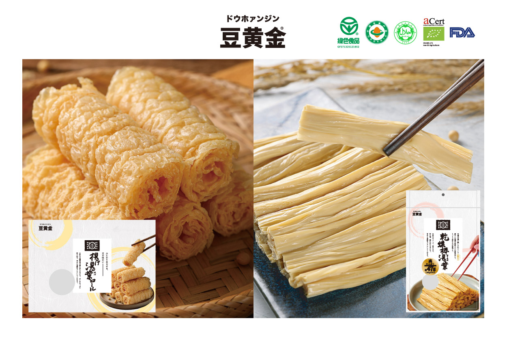
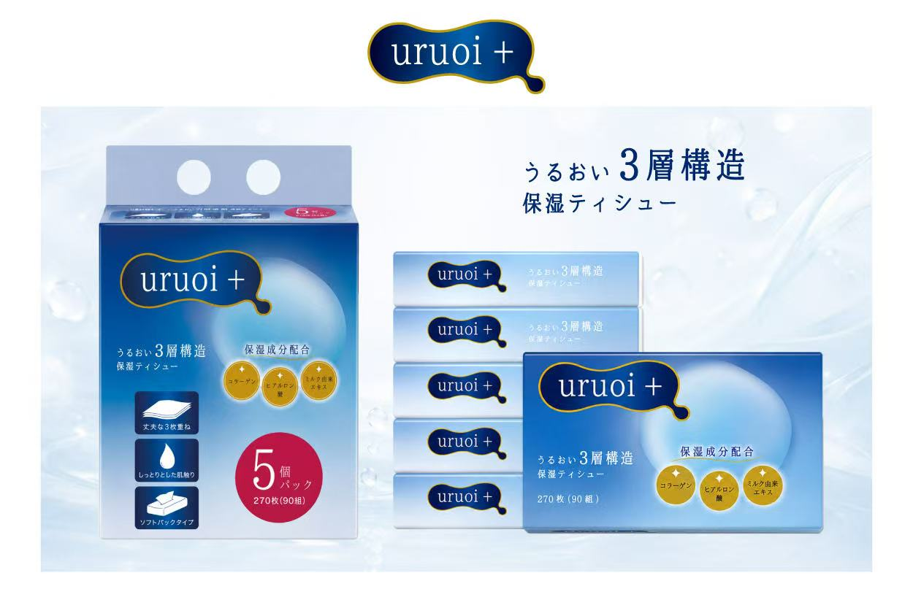
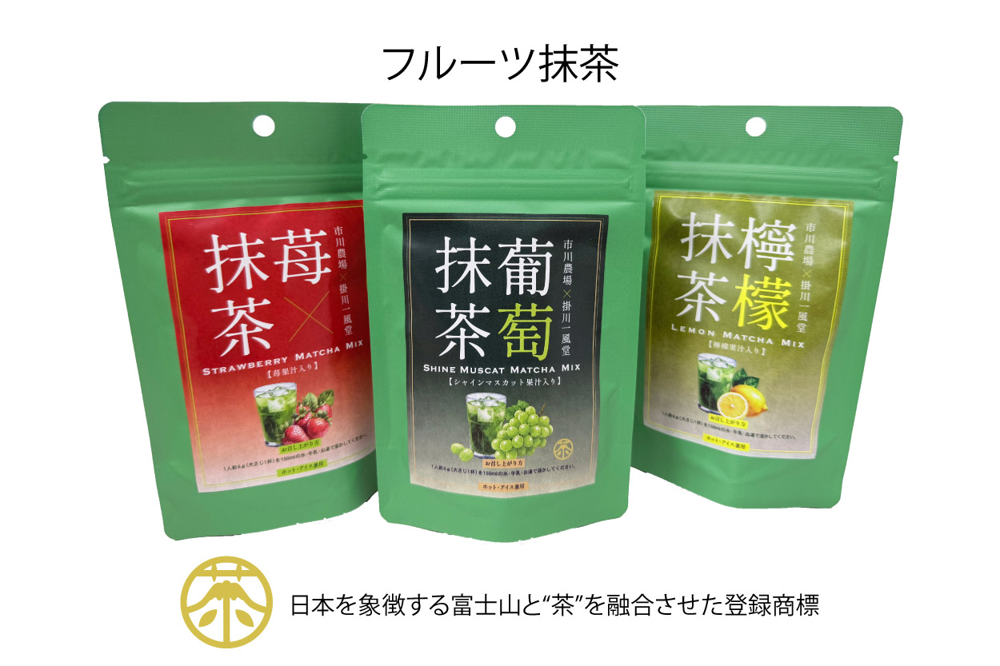
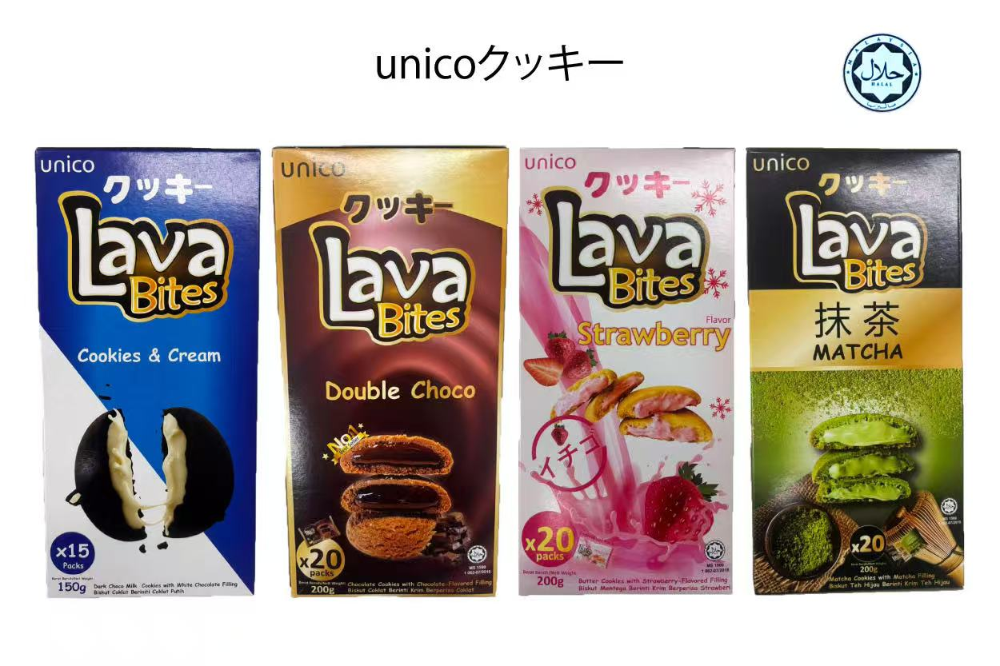

豆黄金
豆黄金 × FJS
中国で愛される豆のおいしさを、日本の新しい食文化へ。
豆黄金は、中国の多くの飲食店でも採用されている豆製品ブランドです。
長年培ってきた製造技術と、原料への徹底したこだわり。
そして、「本当においしい豆製品を届けたい」という想い。
FJSは豆黄金の輸入代理店として、豆黄金が生み出す新しい豆のおいしさを、日本の皆様へお届けしてまいります。
Collaboration
FJSインターナショナルでは、国内外のメーカー・ブランドとの協業を通じて、それぞれの商品やブランドが持つ魅力を活かした展開に取り組んでいます。



